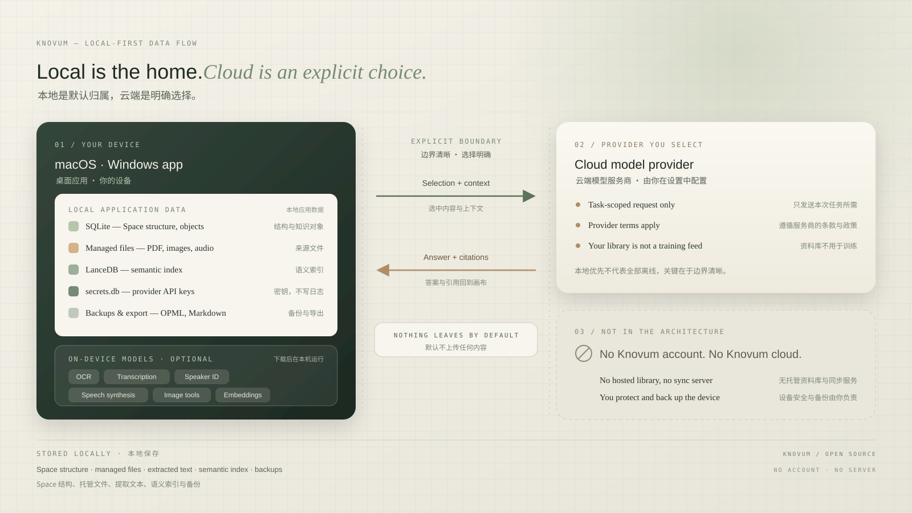

你的知识资料库
Spaces、文件、提取文本与托管资源保存在本地应用数据中。SQLite 存储结构，LanceDB 支持语义搜索。
为重要的思考与创作，留一处从容的空间。
查看最新版本
数据边界
Knovum 无需账号，也不运营托管式知识服务。你的 Spaces、来源文件、提取文本、搜索索引和备份都存储在设备的本地应用数据中。
这意味着 Knovum 本身不会成为上传和同步整个资料库的云端位置。同时，你需要自行保护并备份保存资料库的设备。
| 数据 | 存储位置 | 是否离开设备？ |
|---|---|---|
| Spaces、笔记与来源文件 | 本地应用数据 | 否 |
| 提取文本与搜索索引 | 本地应用数据 | 否 |
| API 密钥与凭据 | 独立的本地密钥数据库 | 否 |
| 下载的模型文件 | 本地应用数据，可移除 | 否 |
| 云端 AI 问答与生成 | 你选定的服务商，按任务范围 | 仅在你主动选择时 |
数据与任务发生在哪里
Spaces、文件、提取文本与托管资源保存在本地应用数据中。SQLite 存储结构，LanceDB 支持语义搜索。
下载模型后，编辑、关键词与语义搜索、转录、说话人识别、OCR、语音合成及列出的图像工具都可以在本机运行。
使用云端模型回答或生成内容时，Knovum 会向你选定的服务商发送该任务所需的选中内容与上下文。数据处理遵循该服务商的条款。
云端服务商如何处理请求，由该服务商自己的条款、隐私政策和账号设置决定。
哪些内容保存在本地
Knovum 的架构将知识库保留在设备上。本地应用数据包括 Space 结构、托管内容、提取文本、语义索引和备份。
SQLite、LanceDB 与本地托管文件。
API 密钥存储在独立的本地密钥数据库中，不会写入日志。
在功能需要时下载，通过固定的 SHA-256 摘要校验，并可在设置中移除。
清晰而诚实的边界
部分能力在下载模型后可在本机运行。AI 问答与生成则可以在配置并主动选择后使用云端服务。Knovum 会明确区分两者，但无法替第三方服务商决定其数据政策。
让资料库留在身边，让每一次外部传输都有明确目的。
可选的使用情况统计
公开网站可以使用 Cloudflare Web Analytics 统计页面访问与性能数据。只有站点所有者为部署配置 Cloudflare 站点 Token 后，页面才会加载统计脚本。相关网站测量数据由 Cloudflare 按其条款和隐私政策处理。
桌面端使用统计默认开启。统计服务地址已配置时，Knovum 每个 UTC 日最多发送一次应用启动事件，包含随机安装标识、应用版本、操作系统平台和事件名称。该标识属于假名化标识，Worker 会在存储前将其转换为 HMAC 摘要，不会保存原始标识。每日记录会在 90 天后删除。你可以随时在「设置 → 关于」中关闭统计。D1 不保存 Spaces、笔记、文件、文件路径、搜索内容、提示词、生成内容、凭据、账号信息、姓名、邮箱或请求 IP 地址。Cloudflare 可能会依据其服务条款和隐私政策处理连接元数据。
你可以随时关闭该设置，停止后续事件发送并清除本地安装标识。此前已收到的每日记录仍会按 90 天保留期限自动删除。
桌面端使用统计默认开启。你可以随时在「设置 → 关于」中关闭。